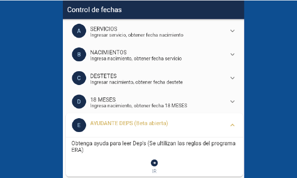
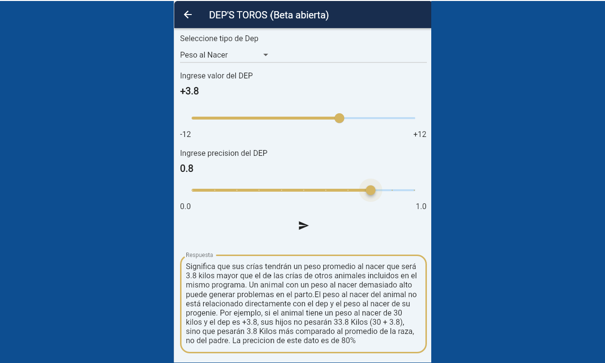

Analista de Sistemas, Admin. contable y Profesor de
informática.
Mi objetivo es ofrecer soluciones de manera eficiente mediante el desarrollo Back-End.
Tengo como prioridad automatizar tareas repetitivas y mejorar los procesos existentes,
con el fin de aumentar la eficiencia y productividad en diferentes áreas.
Interprete de Dep's


¡Descubre la PRIMER aplicación web, para Interpretar DEP'S! Esta herramienta te permite obtener información valiosa
sobre tus animales de una manera rápida y sencilla.
La función estrella de nuestra aplicación es la capacidad de interpretar los datos numéricos de los Deps
(datos de producción ganadera) y convertirlos en información comprensible. Simplemente ingresa los datos del Dep en números y nuestra aplicación generará un texto explicativo
detallado sobre el Dep en cuestión. Nunca antes había sido tan fácil entender y aprovechar al máximo los datos de tus animales.
Pero eso no es todo. Nuestra aplicación también ofrece otras funciones útiles y prácticas para facilitar tu trabajo:
Fechas de Servicios: Ingresando la fecha en la que se realizó el servicio, obtendrás la fecha de nacimiento de la cría.
Esto te permite tener un seguimiento preciso del ciclo reproductivo de tus animales.
Fechas de Nacimientos: Ingresando la fecha de nacimiento de una cría, obtendrás la fecha del servicio correspondiente.
Fechas de Destetes: Ingresando la fecha de nacimiento de una cría, nuestra aplicación te proporcionará la fecha recomendada para realizar el destete.
Fecha de 18 Meses: Ingresando la fecha de nacimiento de un animal, recibirás la fecha recomendada para realizar el pesaje final a los 18 meses.
Esto te brinda información clave para evaluar el desarrollo y rendimiento de tus animales.
Nuestra aplicación web está diseñada para ser fácil de usar y accesible desde cualquier dispositivo con conexión a internet.
Ya sea que estés en la oficina, en el campo o en un remate, tendrás acceso instantáneo a información precisa y relevante.
¡Potencia tu ganado tomando decisiones informadas!